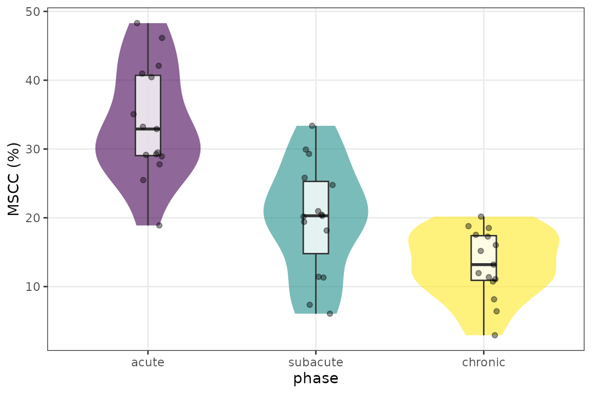

Overview
scimagR provides the building blocks of a longitudinal MRI and CT analysis in spinal cord injury (SCI) research. This vignette walks you through:
- Installing prerequisites
- Creating a new project
- Organising your data
- Planning the processing steps
- Computing metrics and plotting results
All code below runs without the external imaging tools, on synthetic data and in a temporary folder, except the tool checks in the next section.
Prerequisites
The image-processing wrappers need the following external tools. They are optional: the metrics, registry, quality-control and plotting functions work without them.
- Spinal Cord Toolbox (SCT) >= 6.4: https://spinalcordtoolbox.com (SCT 6 and SCT 7 command syntax are both supported)
- dcm2niix: https://github.com/rordenlab/dcm2niix
-
Python 3 with pydicom:
pip install pydicom
Check that all tools are available:
Creating a Project
Use sci_create_project() to scaffold a new
workflowr-based analysis project. Here it is created in a temporary
folder; use a permanent path such as
"~/projects/my-sci-study" for real work.
library(scimagR)
proj <- file.path(tempdir(), "my-sci-study")
sci_create_project(
path = proj,
title = "Cervical SCI Longitudinal MRI Analysis",
author = "Your Name",
open = FALSE
)
#>
#> ── Creating SCI project: Cervical SCI Longitudinal MRI Analysis ────────────────
#> ✔ Directory structure created.
#> ✔ Templates created.
#> ✔ Project created at /tmp/RtmpQc1bjm/my-sci-study
#> ℹ Next steps:
#> 1. Place DICOM files in data/raw/dicom/
#> 2. Fill in data/metadata/imaging_registry.csv
#> 3. Fill in data/metadata/clinical_data.csv
#> 4. Plan the processing steps with `sci_run_pipeline()`
list.files(proj)
#> [1] "analysis" "code" "data" "manuscript" "results"
#> [6] "scripts"This creates a complete directory structure with template files, configuration, and analysis Rmd notebooks.
Data Organisation
Place your DICOM files in data/raw/dicom/ following this
structure:
data/raw/dicom/
├── SCI001/
│ ├── ses-01/
│ │ └── *.dcm
│ └── ses-02/
│ └── *.dcm
└── SCI002/
└── ses-01/
└── *.dcmFill in the CSV templates in data/metadata/:
-
imaging_registry.csv: One row per imaging session -
clinical_data.csv: One row per patient
Planning the Processing Steps
sci_run_pipeline() is a planner: it lists the eight
processing steps and the function that performs each one. It does
not run the Spinal Cord Toolbox, ‘dcm2niix’ or
‘pydicom’ and does not check what has been done, so every step is
reported as "pending" (step 2, anonymisation, as
"skipped" unless anonymize = TRUE).
plan <- sci_run_pipeline(proj, verbose = FALSE)
plan
#> # A tibble: 8 × 4
#> step name status message
#> <int> <chr> <chr> <chr>
#> 1 1 DICOM metadata extraction pending run extract_dicom_metadata()
#> 2 2 Anonymisation skipped anonymize = FALSE
#> 3 3 DICOM to NIfTI conversion pending run convert_batch()
#> 4 4 Spinal cord segmentation pending run sct_segment_sc()
#> 5 5 Lesion segmentation (SCIsegV2) pending run sct_segment_lesion()
#> 6 6 Vertebral labelling pending run sct_label_vertebrae()
#> 7 7 Parameter extraction pending run sct_analyze_lesion() and sct…
#> 8 8 Merge & export pending run save_table() and save_rds()Run the function named in each row (see
vignette("sct-interface")), then check which outputs exist
with sci_pipeline_status(). It scans
data/nifti/<pat_id>/<session>/; a new project
has no sessions yet:
sci_pipeline_status(proj)
#> # A tibble: 0 × 8
#> # ℹ 8 variables: pat_id <chr>, session <chr>, converted <lgl>, sc_seg <lgl>,
#> # lesion_seg <lgl>, vert_labels <lgl>, qc_done <lgl>, params_extracted <lgl>Computing SCI Metrics
scimagR implements common SCI metrics. They are vectorised, so they
can be used inside dplyr::mutate():
# Maximum spinal cord compression (Fehlings et al. 1999)
compute_mscc(di = 5.2, da = 8.1, db = 8.5)
#> [1] 37.3494
# Anteroposterior compression ratio (Ogino et al. 1983)
compute_compression_ratio(ap = 6.5, transverse = 12.0)
#> [1] 0.5416667
# Phase classification
classify_phase(c(0, 5, 30, 200, 400))
#> [1] hyperacute acute subacute intermediate chronic
#> Levels: hyperacute < acute < subacute < intermediate < chronicWorking with the Registry
The package ships a synthetic example registry with three patients:
reg <- validate_registry(
system.file("extdata", "example_registry.csv", package = "scimagR")
)
#> ✔ Registry validation passed.
coverage_matrix(reg)
#> # A tibble: 3 × 4
#> pat_id `ses-01` `ses-02` `ses-03`
#> <chr> <chr> <chr> <chr>
#> 1 SCI001 MRT MRT MRT
#> 2 SCI002 CT+MRT MRT NA
#> 3 SCI003 CT MRT MRTVisualisation
Use the built-in theme, palettes and plot types for publication-ready figures. The coverage plot shows which modality each patient has at each session, with the artefact grade printed on the tile:
plot_coverage(reg)
Synthetic MSCC values by phase:
set.seed(42)
mscc_data <- data.frame(
phase = factor(rep(c("acute", "subacute", "chronic"), each = 15),
levels = c("acute", "subacute", "chronic")),
mscc = c(rnorm(15, 30, 8), rnorm(15, 22, 6), rnorm(15, 15, 5))
)
plot_violin_box(mscc_data, x = "phase", y = "mscc", ylab = "MSCC (%)")